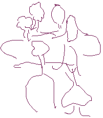

Blackett Family DNA Activity
Introduction
Welcome to the Blackett Family DNA Activity. Bob Blackett is a DNA analyst. As part of his training, he made a DNA profile of his own family using a technique called RFLP analysis. Family studies are a good way to learn about DNA profiling and RFLP analysis because you can follow the inheritance of DNA markers (alleles) from one generation to the next.
In this activity, you will:
- learn the concepts and techniques behind DNA profiling
- interpret DNA autoradiograms
- evaluate DNA profiles to determine familial relationships
There is also a sequel to this activity, Blackett Family DNA Activity 2 , where you can learn about the most current method of DNA profiling based on analysis of short tandem repeat polymorphisms.
|

back row: grandparents Norma and Fred |
RFLP Analysis |


The Biology Project
University of Arizona
October 27, 2000
hallick@email.arizona.edu
http://biology.arizona.edu
All contents copyright © 1996-2000. All rights reserved.